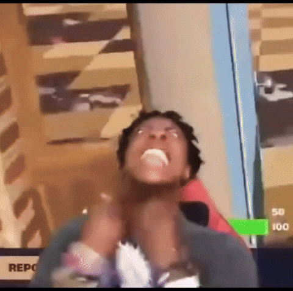

E01 / DPPI 2026
MediaPipe · cámara web
Gestos

GESTOS✦
Sobre el proyecto
Experiencia interactiva de reconocimiento de gestos faciales y manuales con cámara web. MediaPipe identifica manos y rostro para activar imágenes y GIFs según el gesto detectado.
Registro de funcionamiento pendiente.
Graba 30–60 segundos mostrando la cámara, un gesto y la respuesta visual.